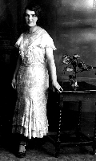
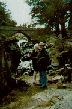

Violet Dickson
1909-1993

Links with my family ?
These are a summary of the families I am researching
Main family name is Dickson
- Direct descendent of William Dickson b (abt) 1818 Limerick, Ireland
Other family names in Ireland
Family names in the United Kingdom
- Holding (Origins, Sheffield, England)
Family names in Scotland
Dickson, who lived in Glasgow
- Matilda Dickson, Cathleen Dickson, Johanna Dickson (all sisters)
Other Families being researched
Quayle (Origins IOM and Glasgow)
Don & Sheila Dickson
April 1996

An illustration of the" Dickson Coat of Arms" is documented in the Rietstap Armorial General and may be viewed by clicking below.